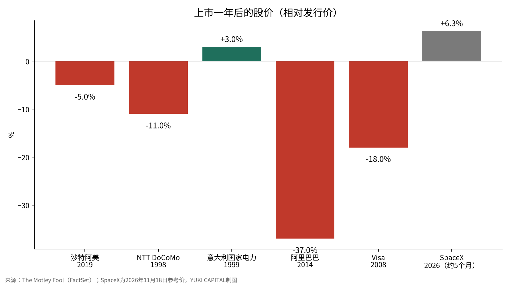
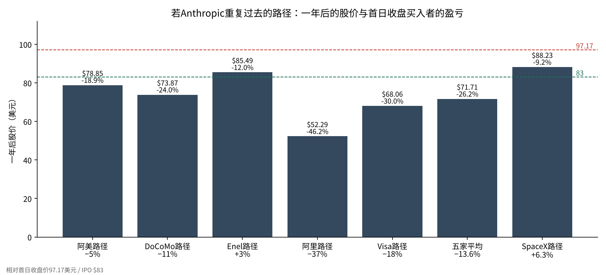

史上最大的IPO后来怎么样了？用沙特阿美、阿里巴巴、SpaceX上市一年后的股价，检验Anthropic 83美元的发行价
Anthropic于2026年11月19日在纳斯达克开始交易，首日收于97.17美元，较83美元的发行价上涨17.07%。募资约813亿美元，超过6月SpaceX的750亿美元，成为美国史上最大的IPO[3][10]。
大型上市的第一天往往看起来光鲜。真正的考验是之后的一年。
本文的问题是：募资规模史上最大级别的IPO，上市一年后是否仍高于发行价？以首日收盘价买入的人结果如何？

- 按通胀调整后募资规模前五名中，上市一年后高于发行价的只有意大利国家电力（+3%），五家平均为−13.6%。
- SpaceX上市约5个月后较135美元发行价上涨6.3%，但较首日收盘价160.95美元下跌10.8%，首日买入者处于浮亏。
- 若Anthropic重复五家的平均路径，一年后约为71.71美元，以首日收盘价买入者亏损26.2%。要高于首日价，需要比过去任何一家都更强的第一年。
问题与背景
三个月后的势头也不可靠。三个月后上涨的三家中，一年后没有一家仍高于发行价。
IPO（首次公开发行）是指公司首次向公众出售股票并在交易所上市。发行价由公司和承销商在发售前确定，首日交易从这个价格开始。
首日大幅上涨，在研究中称为“抑价发行”。公司收到的钱由发行价决定，因此首日涨幅归获得配售的投资者，而不是公司。首日越强，说明公司本可以卖得更贵。
首笔成交价与发行价之差称为首日涨幅。学术统计显示，1980年至2025年美国IPO的平均首日涨幅为18.8%[1]。Anthropic的17.07%与这一平均值几乎相同。
但从长期看，IPO的表现没有首日那么好。同一统计显示，IPO三年持有回报平均落后于规模相近的上市公司[2]。拿到发行价配售的人和首日买入的人，看到的结果完全不同。
IPO规模越大，发售前受到的关注越多。期待一旦提前反映在价格里，之后的一年往往就成了弥合期待与现实差距的时间。
2026年成为半年内出现两次史上最大IPO的一年：6月的SpaceX（750亿美元）和11月的Anthropic（约813亿美元）[3][9]。两者都约为此前纪录——2019年沙特阿美256亿美元——的3倍[8]。
数据与方法
比较对象是按通胀调整后募资规模的史上前五名：沙特阿美（2019年）、NTT DoCoMo（1998年）、意大利国家电力（1999年）、阿里巴巴（2014年）和Visa（2008年）。按2026年美元计，募资分别为380亿、370亿、370亿、350亿和280亿美元[7]。
业绩采用从发行价到上市一年后收盘价的涨跌幅，已调整拆股，数据来自The Motley Fool整理的FactSet数据[7]。各公司的发行价可在其最终招股书（424B4）中核实[4][5][6]。
SpaceX上市未满一年，因此以2026年11月18日的参考价143.5美元作为“约5个月后”列出[11]。其发行价为135美元，首日收盘价为160.95美元[9]。Anthropic以首日收盘价97.17美元为起点[10]。
估算方法很简单：把五家公司各自的一年涨跌幅套用到Anthropic 83美元的发行价上，得出一年后的参考股价，再计算以97.17美元首日收盘价买入者的盈亏。
结果
下表汇总了五家公司的表现。
| 公司 | 上市 | 募资（2026年美元） | 3个月后 | 1年后 |
|---|---|---|---|---|
| 沙特阿美 | 2019年 | 380亿美元 | −21% | −5% |
| NTT DoCoMo | 1998年 | 370亿美元 | +19% | −11% |
| 意大利国家电力 | 1999年 | 370亿美元 | −5% | +3% |
| 阿里巴巴 | 2014年 | 350亿美元 | +20% | −37% |
| Visa | 2008年 | 280亿美元 | +14% | −18% |

五家中只有意大利国家电力在一年后高于发行价（+3%）。其余四家都低于发行价，平均为−13.6%，中位数为−11%。阿里巴巴3个月后上涨20%，一年后却下跌37%[7]。
2012年的Facebook（募资160亿美元）虽不在前五名之内，也走了同样的路。它在三个月内较38美元发行价下跌47%，首日买入者第一年损失约三分之一[8]。2018年上市的软银（电信公司）首日即下跌15%[8]。
3个月后上涨，并不代表一年后仍然上涨。DoCoMo、阿里巴巴和Visa在3个月后都高于发行价，但一年后三家都跌破了发行价[7]。最初几个月的势头，对第一年的结果几乎没有指示作用。
SpaceX约5个月后较发行价上涨6.3%，但较首日收盘价160.95美元下跌10.8%[9][11]。获得配售的人与首日在市场买入的人之间的差距，在这里同样出现。
敏感性分析
我检验了Anthropic沿着不同的历史路径，一年后的结果会有多大差别。做法是把各公司的一年涨跌幅套用到83美元的发行价上。

| 路径 | 一年涨跌幅 | 一年后股价 | 首日收盘买入者 |
|---|---|---|---|
| 意大利国家电力 | +3% | 85.49美元 | −12.0% |
| SpaceX（约5个月） | +6.3% | 88.23美元 | −9.2% |
| 沙特阿美 | −5% | 78.85美元 | −18.9% |
| DoCoMo | −11% | 73.87美元 | −24.0% |
| 五家平均 | −13.6% | 71.71美元 | −26.2% |
| Visa | −18% | 68.06美元 | −30.0% |
| 阿里巴巴 | −37% | 52.29美元 | −46.2% |
即使是最好的意大利国家电力路径，以首日收盘价买入的人一年后也会亏损12.0%。最差的阿里巴巴路径下，股价跌至52.29美元，首日买入者几乎损失一半。
首日收盘价买入者要在一年后不亏损，股价需较发行价上涨17.07%以上。过去五大IPO中，没有一家在一年后越过这条线[7]。
讨论
也有相反的看法：募资规模与之后的表现关系不大。从长期看，Visa较发行价上涨1,912%，阿里巴巴上涨48%，决定差别的是行业与业务实力[7][8]。
事实上，能源和电信公司表现平平，而金融和科技公司在五年后大幅上涨[8]。Anthropic是AI公司，与这五家都不属于同一行业。套用过去的路径本身就有局限。
有专家建议，熬过上市初期的波动，等公司发布几次财报后再重新评估[8]。思路是：锁定期解除、流通股增加、真实业绩显现之后，价格才会趋于稳定。
本文有三个局限。第一，比较对象只有五家，无法排除偶然。第二，一年回报中混入了上市后整体市场的走势。第三，数字未包含股息和汇率的影响。
检验标准有两个：2027年11月19日Anthropic的收盘价是在83美元之上还是97.17美元之上；以及大股东锁定期解除前后股价如何变化。
结论
史上最大级别的IPO，一年后并不一定高于发行价。前五名中有四家低于发行价，平均为−13.6%。
对以首日收盘价买入的人尤其不利。按这些数字，无论Anthropic沿哪条历史路径，以97.17美元首日买入的人一年后都会亏损。
看大型上市时，需要把首日涨幅和一年后的表现分开看。首日17%的涨幅，与其说反映公司价值，不如说更多反映了发行定价的方式。
大型上市属于能把时间变成盟友的人。第一年表现差的公司，有的十年后却是明显的赢家。买入之前先决定持有的时间跨度，才最重要。
我的看法
我在日本，一直把Anthropic看作上市后会持有10年、20年的公司。我已经在个人账户中买入，但在以YUKI CAPITAL公开的账户里，还一股都没有买。
公开账户的买入条件是：股价跌破83美元发行价时，先买500股。这次检验确认了大型IPO在第一年内容易出现跌破发行价的阶段。所以我不追首日的热度，而是等到那条线。
参考文献
- Jay R. Ritter, University of Florida「Initial Public Offerings: Updated Statistics」（2026年1月） https://site.warrington.ufl.edu/ritter/files/IPO-Statistics.pdf
- Jay R. Ritter「IPOs: Long-run Returns」（2025年） https://site.warrington.ufl.edu/ritter/files/IPOs-long-run-returns-on-IPOs.pdf
- Anthropic「Anthropic prices initial public offering」（2026年11月18日） https://www.anthropic.com/news/anthropic-prices-initial-public-offering
- U.S. SEC EDGAR「Alibaba Group Holding（CIK 1577552）の目論見書 424B4」（2014年9月） https://www.sec.gov/cgi-bin/browse-edgar?action=getcompany&CIK=0001577552&type=424B4
- U.S. SEC EDGAR「Facebook, Inc.（CIK 1326801）の目論見書 424B4」（2012年5月） https://www.sec.gov/cgi-bin/browse-edgar?action=getcompany&CIK=0001326801&type=424B4
- U.S. SEC EDGAR「Visa Inc.（CIK 1403161）の目論見書 424B4」（2008年3月） https://www.sec.gov/cgi-bin/browse-edgar?action=getcompany&CIK=0001403161&type=424B4
- The Motley Fool「What Happened After the 5 Biggest IPOs in Stock Market History」（2026年5月13日・FactSet のデータ） https://www.fool.com/investing/2026/05/13/what-happened-after-5-biggest-ipo-stock-spacex/
- The Motley Fool「The biggest IPOs ever」（2026年） https://fool.com/research/biggest-ipos-ever/
- NPR「SpaceX IPO makes history as largest ever. Stock gains 19% on first day」（2026年6月12日） https://npr.org/2026/06/12/nx-s1-5855004/stock-ai-spacex-ipo-elon-musk
- CBS News「Anthropic shares gain 17% on first day of trading after record IPO」（2026年11月19日） https://www.cbsnews.com/news/anthropic-ipo-nasdaq-debut-claude-ai/
- 野村證券 預り資産（SpaceX の参考時価・2026年11月18日） https://yuki-capital.com/numbers/capital/
图表由YUKI CAPITAL制作。照片：Unsplash
我每天在X上记录数字与判断。